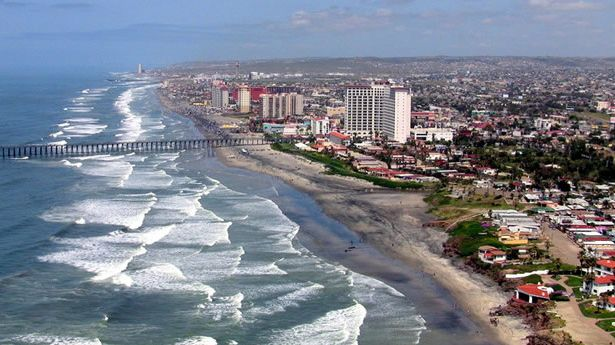
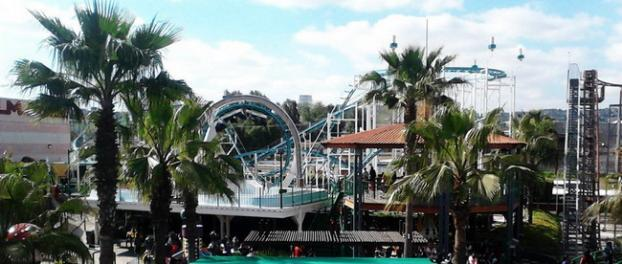

Recuerdo muy bien la época yo tenía como unos siete años de edad en ese tiempo me acuerdo que hacia un calorón y mucha gente acostumbraba ir al rio por los calorones recuerdo muy bien que siempre estaba lleno de gente y pues la verdad a nosotros no nos gustaba mucho ir cuando iba mucha gente y cuando más se llenaba era los domingos, un domingo no recuerdo el mes ni nada nos dijo que nos iríamos al rio un rato y haríamos in cebichito pero que iríamos a otra parte del rio no a donde acostumbrábamos a ir porque era domingo y estaba lleno, ese día se alborotaron dos hermanas de mi papa que viven en el mismo solar hoy en día así que no les dijo que no, recuerdo que él tenía un carrito chico no recuerdo la marca solo recuerdo el coló que era tinto y algo que nunca se me olvida es que tenía una dibujo en la cajuela de un Cantinflas eso nunca se me va a olvidar, recuerdo que juntamos todas las cosas para irnos llevábamos mesas sillas y todo eso lo amarramos en el techo, así que todos se empezaron a subir al carrito como yo tonto espere a que todos se subieran, así que no alcance lugar, y mi papa dijo nimodo te vamos a echar en la cajuela, y ya me subí en la cajuela me la dejaron abierta para que no me fuera a ahogar recuerdo que no era yo solo iba acompañándome un primo que tampoco entro al carro así que los dos nos subieron a la cajuela, recuerdo que el camino estaba muy feo había mucha tierra porque era un lugar en donde casi no iba gente, ya que casi íbamos, la tierra estaba más esponjada así que la tierra se estaba metiendo por la cajuela y como iba abierta se nos llenó toda la cara y boca de tierra recuerdo que casi no podía respirar, me la pase muy bien ese día ya que como estaba solo el rio nos bañamos muy a gusto nos tirábamos clavados a gusto
 Otras de las aventuras que han marcado mi vida y que son muy importantes fue cuando fui de vacaciones a Tijuana con un tío, mi tío con el que me fui es hermano de mi papa que vive en Navojoa él fue el que me invito para haya, en ese entonces yo iba saliendo de la secundaria, yo nunca había ido para haya no conocía nada, cuando llegamos para a Tijuana llegamos con otro tío hermanos de mi papa que vive haya, recuerdo que ese día me divertí mucho aunque solo nos quedamos como 4 días los disfrute mucho, recuerdo que visitamos una playa de nombre rosarito recuerdo que estaba muy bonita había muchas cosas muchos hoteles, había así como un muelle donde la gente podía pasear, había gente bañándose ,todo fue muy bonito, También me acuerdo que fuimos al mundo divertido, es un lugar con muchos juegos así como una feria había todo tipo de juegos por donde sea para todas las edades ya sea para adultos jóvenes o niños, ese día me divertí mucho porque me subí a muchos juegos que en mi vida había visto
Estas son unas de las aventuras que más han marcado mi vida hay más solo que no recuerdo bien del todo, hay muchas cosas que contar.